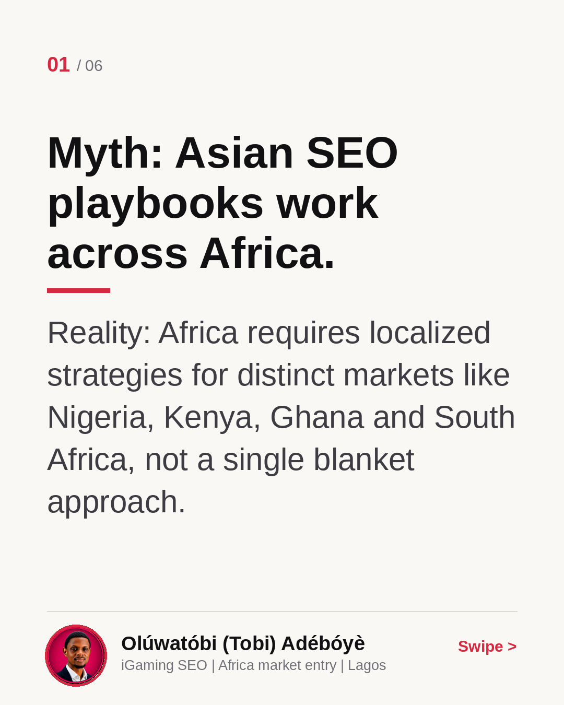
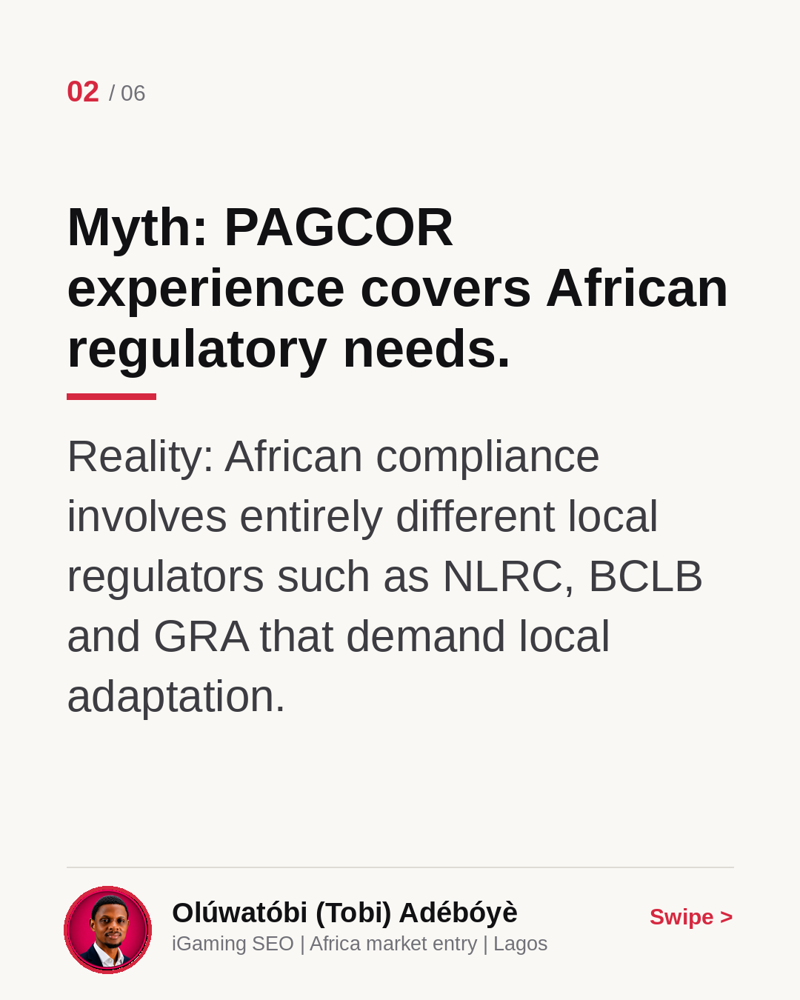
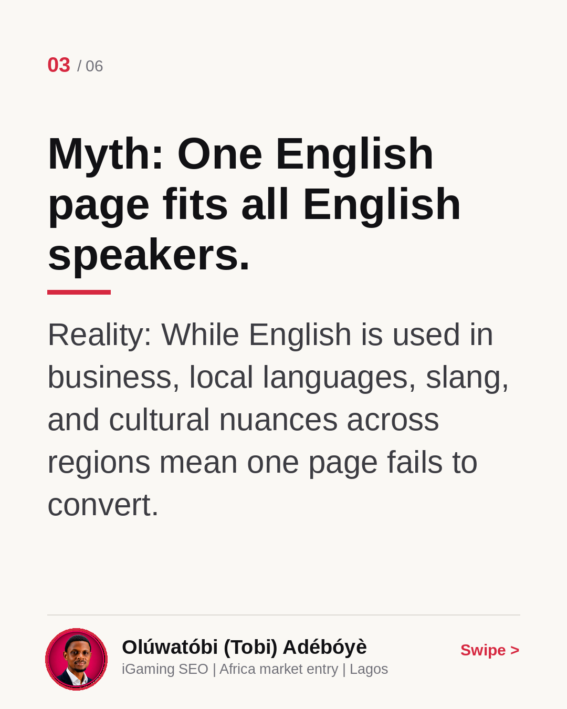
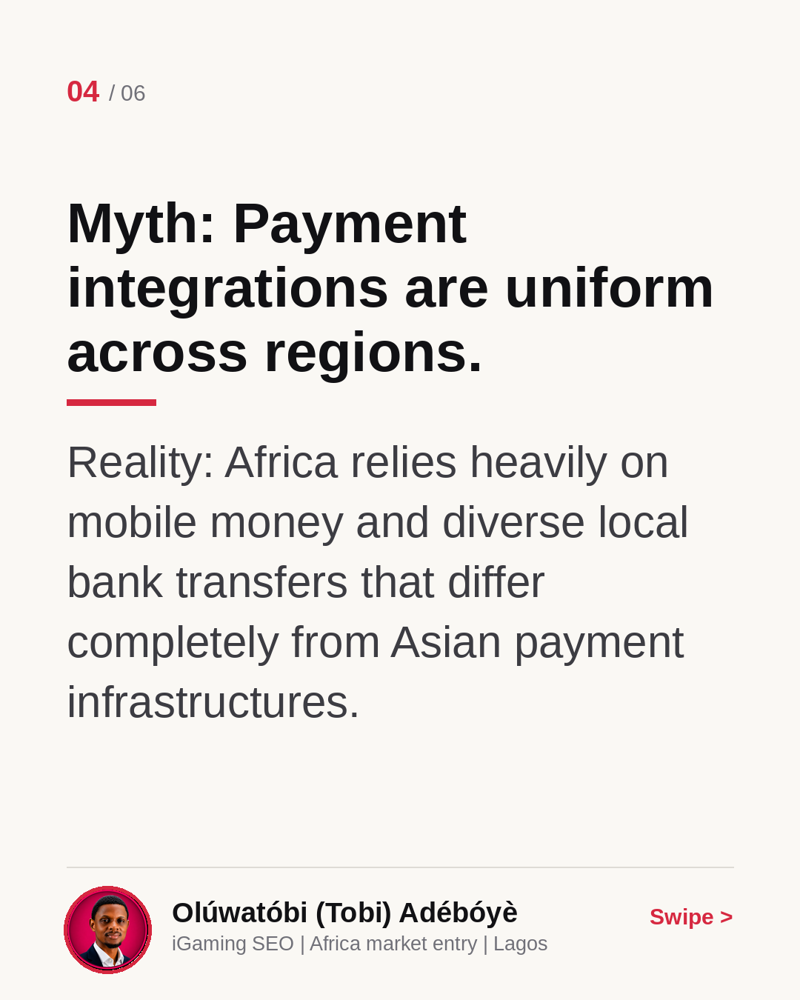
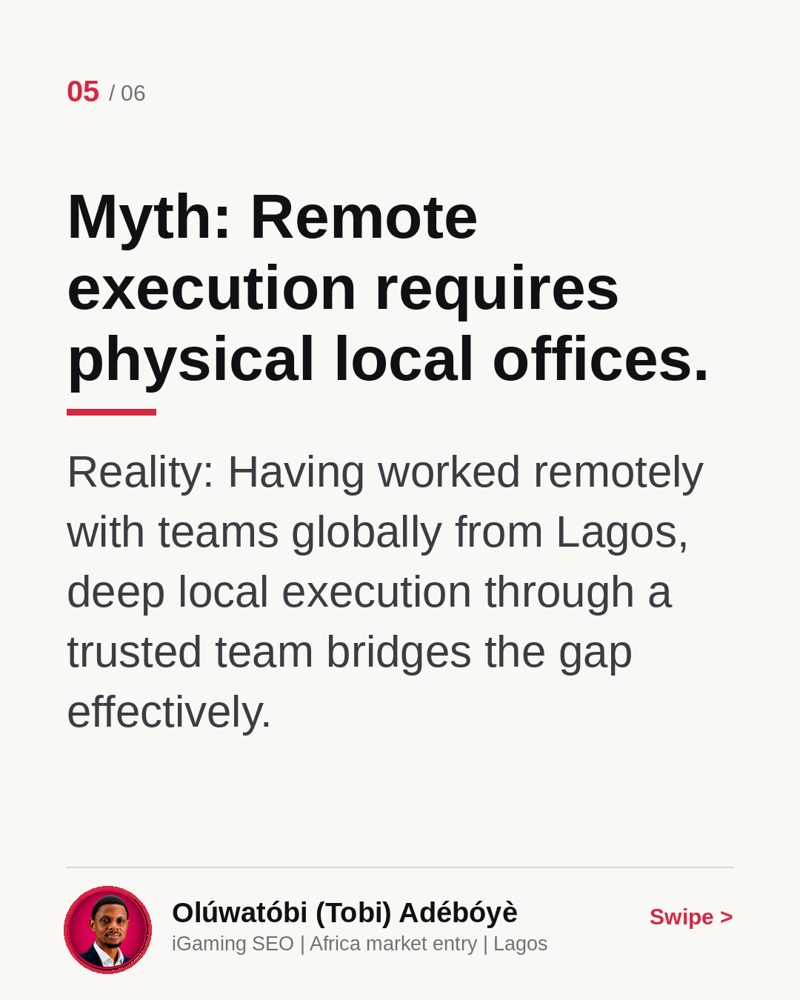
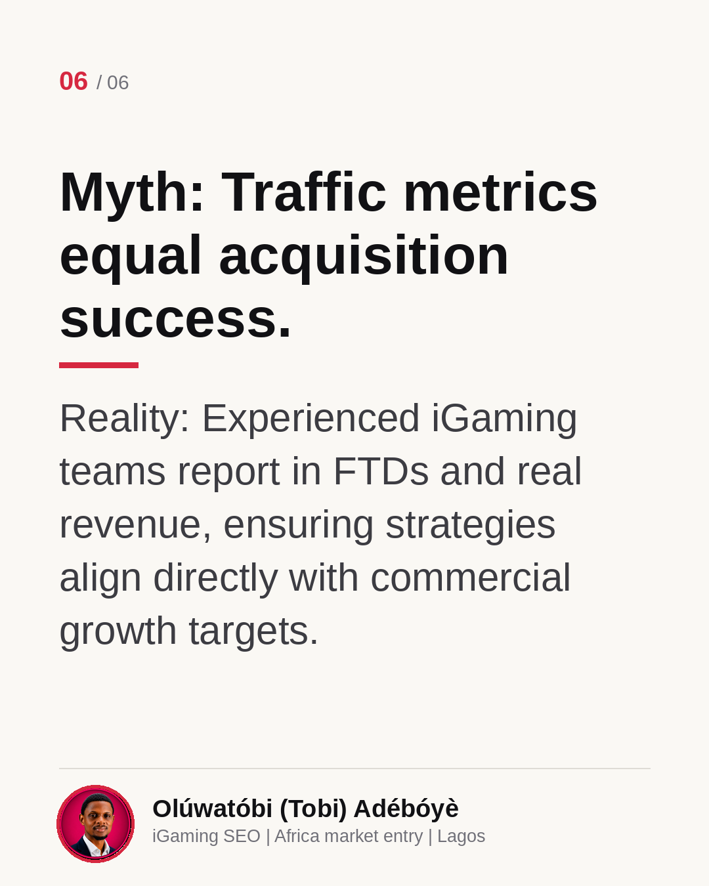

Philippines and Africa iGaming expansion
Expanding from Asia into Africa requires more than just copying existing playbooks. In this carousel, I break down what actually transfers between the Philippines and Africa, and what international operators must rebuild from scratch. Swipe through to see the core differences in regulation, localization, and payments, then let me know in the comments: which market are you targeting next?
Myth: Asian SEO playbooks work across Africa.
Reality: Africa requires localized strategies for distinct markets like Nigeria, Kenya, Ghana and South Africa, not a single blanket approach.

Myth: PAGCOR experience covers African regulatory needs.
Reality: African compliance involves entirely different local regulators such as NLRC, BCLB and GRA that demand local adaptation.

Myth: One English page fits all English speakers.
Reality: While English is used in business, local languages, slang, and cultural nuances across regions mean one page fails to convert.

Myth: Payment integrations are uniform across regions.
Reality: Africa relies heavily on mobile money and diverse local bank transfers that differ completely from Asian payment infrastructures.

Myth: Remote execution requires physical local offices.
Reality: Having worked remotely with teams globally from Lagos, deep local execution through a trusted team bridges the gap effectively.

Myth: Traffic metrics equal acquisition success.
Reality: Experienced iGaming teams report in FTDs and real revenue, ensuring strategies align directly with commercial growth targets.
